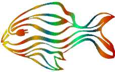

Electric Fish Clients
Electric Fish has provided software development services
to a wide varienty of clients. Here is a listing of our clients and a brief
description of the work we did for them. References are also provided where
appropriate.
Home | Services
| Products | Consultants
| Clients | Corporate | Related
| WashTech
This page was last modified on 13 November 2001. This site is maintained
by Richard Wesley.
Copyright © 1996-2001 Electric Fish, Inc. All Rights Reserved.